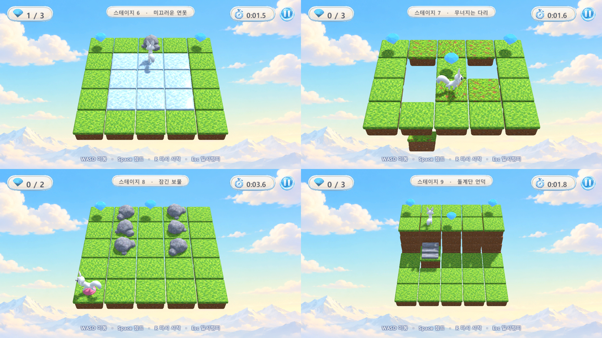

얼음
I🦊→멈춤
- 얼음 칸에 들어서면(걷기·점프 착지 모두) 그 방향으로 한 칸씩 계속 미끄러집니다.
- 얼음이 아닌 칸에 들어서면 그 칸에서 멈춥니다.
- 앞이 장애물·닫힌 문·더 높은 칸이면 지금 얼음 칸에서 멈춥니다.
- 앞이 구멍·맵 밖이면 미끄러져 떨어집니다.
- 미끄러지며 지나간 칸의 보석은 먹습니다. 미끄러지는 동안은 조작할 수 없습니다.
새 칸 네 가지로 퍼즐을 깊게 합니다. 칸이 놓이는 바닥과 보석·시작 같은 물건을 따로 저장하고, 무너진 칸과 열린 문처럼 판 상태가 바뀌는 것까지 이동 규칙과 맵툴 검증이 함께 계산합니다.
rows는 바닥만, 새 items는 보석·시작만 담습니다. 그래서 얼음이나 무너지는 칸 위에도 보석을 놓을 수 있습니다.
{
"version": 3,
"name": "미끄러운 연못",
"id": "미끄러운 연못",
"width": 5, "height": 4,
"rows": [ "..D..", ".III.", "W.C..", "....." ],
"items": [ "..G..", "...G.", ".....", "S...." ],
"floors": [ "11111", "11111", "11111", "11111" ]
}
| 층 | 기호 |
|---|---|
rows 바닥 | . 땅 · O 구멍 · # 장애물 · I 얼음 · C 무너짐 · W 스위치 · D 문 · T 계단 |
items 물건 | . 없음 · G 보석 · S 시작 |
floors 층 | 1~9 (그대로) |
버전 1·2 파일은 읽을 때 rows의 G·S를 items로 옮기고 그 자리 바닥은 땅으로 둡니다. 맵툴에서 저장하면 버전 3이 됩니다. 보석·시작은 구멍·장애물·문 위에 둘 수 없습니다(검증 오류).
MoveRules를 씁니다.| 키 | 붓 | 참고 |
|---|---|---|
1 | 땅 | 그 칸의 보석·시작도 지움 (지우개 역할) |
2 3 | 구멍 · 장애물 | 물건도 지움 |
4 5 6 | 얼음 · 무너짐 · 스위치 | 물건은 그대로 |
7 | 문 | 물건도 지움 |
8 | 계단 | 물건은 그대로 |
9 0 | 보석 · 시작 | 바닥이 못 서는 칸이면 땅으로 바꿈 |
H, Q/E | 높이 | (높이 붓이 6 → H로 바뀜) |
테스트가 칸마다 움직여 보며 찍은 화면입니다. 왼쪽 위부터 미끄러운 연못(얼음에서 미끄러져 보석을 먹고 바위 앞에서 멈춤), 무너지는 다리(떠난 칸이 떨어지는 중), 잠긴 보물(분홍 스위치를 밟아 문이 내려감), 돌계단 언덕(계단으로 4층 고원에 오름).
